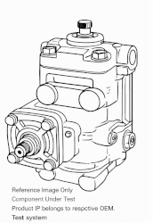
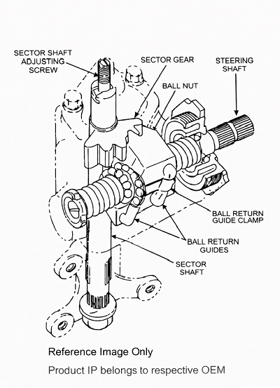

Ball & Nut Hydraulic Power Steering — Load Test Rig
Engineered a comprehensive 4-station automated testing rig adhering strictly to IS 14269:1995 standards for commercial vehicle power steering gears. The system transforms rotary input from the steering wheel into linear motion using a recirculating ball mechanism, utilizing pressurized ATF (Automatic Transmission Fluid) at 160 ± 10 bar to evaluate torsion bar stiffness, spool displacement, and pitman arm torque transmission.


4-Station Testing Architecture (IS 14269 : 1995)
- Station 1 — Air Leak Testing Station: Low-pressure pneumatic and high-pressure hydraulic leakage verification to validate sealing integrity and internal leakage limits.
- Station 2 — Kinematic & Functional Testing Station: Evaluates steering travel, friction torque, mechanical backlash, and pressure–torque boost characteristics.
- Station 3 — High-Pressure Hydraulic Station (160 ± 10 Bar): Supplies ATF at rated operating pressure (160 ± 10 bar), flow, and temperature with closed-loop pressure feedback to test static, dynamic, and endurance loads.
- Station 4 — Automated ATF Oil Draining Station: Clean evacuation and filtration recovery of Automatic Transmission Fluid after endurance validation.
Hydraulic Motor & Pump Selection Calculations
Engineering sizing calculation performed for the hydraulic test circuit and actuation cylinders operating at 160 ± 10 bar:
| Cylinder | Bore (mm) | Stroke (mm) | Load (kN) | Time (sec) | Operating Pressure (bar) | Required Flow (LPM) |
|---|---|---|---|---|---|---|
| C1 | 50 | 300 | 32 | 5 | 160 ± 10 bar | 7.1 LPM |
| C2 | 80 | 200 | 80 | 6 | 160 ± 10 bar | 10.0 LPM |
| C3 | 100 | 150 | 125 | 4 | 160 ± 10 bar | 17.6 LPM |
Formulae Used: Pressure P = Force / Area (160 ± 10 bar) | Flow Q = Area × Velocity | Motor Power (kW) = (P × Q) / 600 (+15% safety margin → 10 kW).
20 – 50 LPM
Selected Pump Flow Capacity
160 ± 10 Bar
Operating Pressure & Relief Valve Setting
10 kW (≈13 HP)
Selected Drive Motor Power
Steering Gear Components & Roles
- Ball Nut Mechanism: Converts rotary steering input to linear motion via recirculating ball bearings.
- Torsion Bar: Detects steering input torque and twists proportionally to actuate the control valve spool.
- Control Valve: Opens left/right pressure ports depending on steering direction.
- Piston and Cylinder: Executes power-assist motion through differential hydraulic pressure.
- Pitman Arm: Transmits sector shaft torque directly to the vehicle steering linkage system.
Hydraulic Torque & Assist
Hydraulic torque refers to the force generated by ATF pressure acting over the piston area to assist driver input. The higher the steering load, the greater the fluid force that supports piston displacement.
Dry Test Condition
In dry test (without fluid), only mechanical backlash and internal clearances can be detected. Full rotational assist, preload feedback, and return-to-center performance require pressurized fluid actuation.